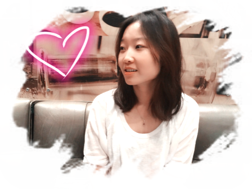

|

- Photo taken in Oct. 2014 - |
||||
|
News
- It's been a great 2-year journey at Qualcomm, but I'll be joining Apple soon! - Click here for a quick and yet moderately detailed overview of Symphony, if you are interested in heterogeneous/power-aware/parallel programming on mobile SoCs. |


|
||||
|
Publications
"Abstract Representation of Shared Data for Heterogeneous Computing", by Tushar Kumar, Aravind Natarajan, Wenjia Ruan, Mario Badr, Dario Suarez Gracia and Calin Cascaval. The 30th International Workshop on Languages and Compilers for Parallel Computing (LCPC 2017), College Station, Texas. October 2017. [PDF] "Symphony – Task Scheduling and Memory Management in Heterogeneous Computing", by Amit Jindal and Wenjia Ruan. The 5th International Workshop on OpenCL (IWOCL 2017), Toronto, Canada. May 2017. [PPT] "Hybrid Transactional Memory Revisited", by Wenjia Ruan and Michael Spear. 29th International Symposium on Distributed Computing (DISC 2015), Tokyo, Japan. October 2015. [PDF] "An Opaque Hybrid Transactional Memory", by Wenjia Ruan and Michael Spear. 10th ACM SIGPLAN Workshop on Transactional Computing (TRANSACT 2015), Portland, OR. June 2015. [PDF] "Transactional Tools for the Third Decade", by Matthew Kilgore, Stephen Louie, Chao Wang, Tingzhe Zhou, Wenjia Ruan, Yujie Liu, and Michael Spear 10th ACM SIGPLAN Workshop on Transactional Computing (TRANSACT 2015), Portland, OR. June 2015. [PDF] "Transactional Read-Modify-Write Without Aborts" , by Wenjia Ruan, Yujie Liu and Michael Spear. Accepted by ACM Transactions on Architecture and Code Optimization (TACO), Volume 11 Issue 4, January 2015 Article No. 63. Presented at HiPEAC 2015, Amsterdam, Netherlands. Jan 2015. [PDF] "STAMP Need Not Be Considered Harmful", by Wenjia Ruan, Yujie Liu, and Michael Spear. 9th ACM SIGPLAN Workshop on Transactional Computing (TRANSACT 2014), Salt Lake City, UT. March 2014. [PDF] "Transactionalizing Legacy Code: An Experience Report Using GCC and Memcached", by Wenjia Ruan, Trilok Vyas, Yujie Liu, and Michael Spear. 19th International Conference on Architectural Support for Programming Languages and Operating Systems (ASPLOS 2014), Salt Lake City, UT. March 2014. [PDF] [PPT] "Boosting Timestamp-based Transactional Memory by Exploiting Hardware Cycle Counters", by Wenjia Ruan, Yujie Liu and Michael Spear. ACM Transactions on Architecture and Code Optimization (TACO), Volume 10 Issue 4, December 2013 Artical No. 40. [PDF] "Delaying Operators and Language-Level Semantics", by Wenjia Ruan, Yujie Liu and Michael Spear. 5th Workshop On the Theory of Transactional Memory (WTTM 2013), Jerusalem, Israel. October 2013. [PDF] "Boosting Timestamp-based Transactional Memory by Exploiting Hardware Cycle Counters", by Wenjia Ruan, Yujie Liu and Michael Spear. 8th ACM SIGPLAN Workshop on Transactional Computing (TRANSACT 2013), Houston, TX. March 2013. [PDF] "On the Platform Specificity of STM Instrumentation Mechanisms", by Wenjia Ruan, Yujie Liu, Chao Wang and Michael Spear. 2013 International Symposium on Code Generation and Optimization (CGO 2013), Shenzhen, China. February 2013. [PDF] [PPT] |
|||||
|
About I like playing piano in my leisure time, currently my favourite is "June: Barcarolle" by Tchaikovsky. I'm also a video game player, favourite types are RPG and SIM. Big fan of The Sims. Looking forward to their VR version, if they are going to have it (Please!). I'm also interested in all kinds of consumer electronics. Hmmm... favorite book? Gone with the Wind. Yeah, kind of old fashioned... |